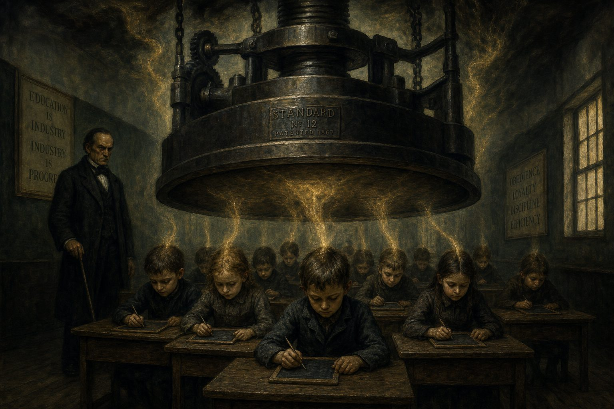

Wat we kinderen aandoen
De systematische uitknijping
Polemiek · 14 min lezen

Door Jacobus van Merksteijn
Een kind van drie zit op de grond. Het speelt. Het bouwt iets van blokken — een toren, of wat in de verbeelding van het kind een toren is. Het kind is volledig aanwezig in wat het doet. Er is geen verleden en geen toekomst in die concentratie. Er is alleen de toren, de hand, de blok, het nu. Dat is het oergevoel in zijn volle werking.
Dan gaat de bel. De kinderopvang heeft een schema. Het is tijd voor de kring. Het kind moet stoppen. Het kind huilt, of het onderhandelt, of het leert al vroeg om te zwijgen en te gehoorzamen.
Dat moment is niet dramatisch. Het is gewoon het schema. Maar het is ook het moment waarop een kind voor de eerste keer leert dat wat het van binnenuit voelt — de concentratie, het opgaan, de complete aanwezigheid — ondergeschikt is aan een externe structuur die het niet heeft gekozen en niet begrijpt. Het leert het, en het vergeet niet.
Dat is wat we onze kinderen aandoen. Niet uit kwaadwilligheid. Uit roosterlogica. Maar de prijs betaalt het kind.
Zeven dimensies, één tegelijk
Artikel 2 van deze editie beschreef het 7-dimensionaal gevoelsmodel: de drie ruimtelijke dimensies, de tijdsdimensie, de G-as (liefde/haat, waardering/afwijzing), de W-as (reëel/irreëel) en de N-as (de individuele positie). Zeven dimensies die samen het menselijke innerlijke leven beschrijven.
Een kind van nul tot zes jaar is van nature thuis in de eerste drie: de ruimtelijke dimensies van het lichaam, de beweging, de directe omgeving. Het leeft in zijn lijf. Het leeft in het nu. Het is expert in het aanvoelen van sferen, mensen en situaties. Het heeft een slaappatroon dat de nachtstroom maximaal benut — jonge kinderen slapen veel en dromen veel, en dat is niet toevallig. De REM-slaap is in de vroege kinderjaren proportioneel het langst; het brein verwerkt de enorme hoeveelheid nieuwe informatie via precies het mechanisme dat artikel 3 beschrijft.
Wat doen wij dan? We beginnen vroeg. Soms al bij zes weken oud, wanneer het kind naar de kinderopvang gaat. We introduceren de tijdsdimensie: schema's, roosters, maandag en dinsdag, om half elf sap en koekje. We introduceren de morele dimensie — de G-as in zijn hemelse gedaante: lief zijn voor anderen, je beurt afwachten, niet slaan, deelnemen aan regels die veronderstellen dat het kind een moreel subject is dat zijn impulsen bewust kan sturen. Dat is een kind van drie niet. De prefrontale cortex — de zetel van moreel redeneren en impulscontrole — is pas volledig rijp rond het vijfentwintigste jaar. Wij vragen een kind van drie te functioneren als een moreel subject van vijfentwintig.
We introduceren de zelfdefinitie: "Wat vind jij leuk? Wat wil jij worden? Wat is jouw favoriete kleur?" Vragen die ontsproten zijn aan de N-as, aan het expliciete zelfbewustzijn. Maar de N-as is in een kind van vier helemaal niet als geïndividualiseerde structuur operationeel. Het kind kan die vraag niet beantwoorden vanuit zichzelf. Het raadt — en raden is precies wat het doet, niet vanuit binnenuit, maar vanuit de verwachting die in de vraag ligt.
Het raadt — en raden is precies wat het doet, niet vanuit binnenuit, maar vanuit de verwachting die in de vraag ligt.
We introduceren de W-as: het onderscheid tussen reëel en irreëel, werkelijk en verbeelding. "Dat bestaat niet echt." "Dat is maar een sprookje." "Monsters bestaan niet." Maar de W-as is in haar abstracte cognitieve vorm pas hanteerbaar voor een kind rond zijn tiende à twaalfde jaar. Vóór die leeftijd leeft een kind in een wereld waar het grenspunt tussen werkelijkheid en verbeelding vloeibaar is — en dat is niet een fout maar een ontwikkelingsfase. Het monster onder het bed is zo werkelijk als het bed. Wie dat ontkent, snijdt niet de angst af maar het vermogen tot symbolisch denken.
Al die dimensies tegelijk, te vroeg, op een brein dat er nog niet rijp voor is.
Wat te vroeg te snel kapotmaakt
Laten we concreet zijn.
De tijdsdimensie te vroeg introduceren — schema's en roosters voor het zesde jaar — produceert kinderen die leren leven in het ritme van een externe klok in plaats van hun eigen biologische ritme. Het bioritme, de eigen snelheid van verwerking, de cyclus van concentratie en herstel — allemaal gaat het op slot. Wat daarvoor in de plaats komt is een reflex op het belgeluid. Dat is geen leren. Dat is conditionering.
De morele dimensie voor het twaalfde jaar in haar abstracte hemelse gedaante — "dat is goed", "dat is fout" als abstracte ethische categorieën — produceert kinderen die leren hun eigen aanvoelen van rechtvaardigheid te wantrouwen. Want hun aanvoelen van rechtvaardigheid is situationeel en direct: dit voelt niet goed. Maar de abstracte moraalregel zegt wat altijd geldt, ongeacht de situatie. Het kind leert: mijn directe aanvoelen is minder betrouwbaar dan de regel. Dat is precies het omgekeerde van wat het kind nodig heeft.
Bovendien: de G-as in zijn hemelse gedaante stelt liefde boven en haat onder, en leert het kind dat het goede omhoog gaat en het kwade omlaag. Maar een kind heeft ook een aardse G-as — het aanvoelen dat liefde ook kan zijn wat draagt en voedt en grond geeft, niet alleen wat hemels omhoog wijst. Door alleen de hemelse G-as aan te bieden, leert een kind zijn eigen aardse aanvoelen te wantrouwen. De moeder die voedt is minder heilig dan de hemel die belooft. Dat is een diep psychologisch probleem dat later in leven zijn prijs presenteert.
Maar een kind heeft ook een aardse G-as — het aanvoelen dat liefde ook kan zijn wat draagt en voedt en grond geeft, niet alleen wat hemels omhoog wijst.
De W-as te vroeg in haar abstracte cognitieve gedaante introduceren — het onderscheid tussen reëel en irreëel als toetssteen voor de legitimiteit van eigen ervaringen — produceert kinderen die hun verbeelding als probleem leren zien. Het kind dat zegt "ik zie een monster" en te horen krijgt "dat bestaat niet" leert niet dat monsters niet bestaan — dat weet het later zelf wel. Het leert dat zijn directe gewaarwording van iets bedreigends niet legitiem is als het geen naam heeft in de catalogus van het boven-waardige. Dat is de kern van wat de aangeleerde loos produceert: het gevoel is er, maar het kind leert dat het er niet mag zijn.
De N-zelfdefinitie te vroeg forceren — "wat vind jij?", "wie ben jij?" — produceert kinderen die een talig zelfconcept bouwen voordat er een gevoeld zelf is om op te bouwen. Het is als een huis op zand — de muren staan, maar er is geen fundament. Later in leven uit dat zich als de vraag die mensen in hun veertigste als crisis ervaren: wie ben ik eigenlijk? Die crisis is geen teken van rijping. Het is een teken dat het zelfbegrip dat op jonge leeftijd werd gebouwd, niet was gefundeerd in het oergevoel.
Gefaseerde introductie: de vier fasen
Er is een alternatief dat niet utopisch maar concreet is. Het gaat niet om het afschaffen van alles wat er is, maar om het aanpassen van de volgorde.
De eerste fase loopt van nul tot zes jaar. In deze fase is het kind thuis in de drie ruimtelijke dimensies: boven en beneden, links en rechts, voor en achter. Het leeft in zijn lichaam en in de directe ruimte om zich heen. Het oergevoel is in die fase op zijn sterkst, precies omdat de hogere dimensies nog niet als systeem zijn geactiveerd.
Wat de opvoeding en het onderwijs in deze fase moeten doen: het oergevoel beschermen. Niet cultiveren in de zin van aansturen — het is er al. Beschermen in de zin van niet overbelasten, niet overschrijven, niet te vroeg abstractie introduceren die de directe beleving vervangt. Geen abstracte tijdsbeleving. Geen formele cijferbeoordelingen. Geen schema's die het biologische ritme van het kind overrulen. Wel: veel bewegen, veel buiten zijn, veel verhalen horen, veel spel met anderen, en de ongestoorde concentratie die elk kind van nature heeft.
De tweede fase loopt van zes tot twaalf jaar. In deze periode wordt de tijdsdimensie geleidelijk hanteerbaar, maar nog concreet: het ritme van de seizoenen, de terugkeer van de zomer, het verschil tussen gisteren en morgen. De W-as kan in haar meest concrete vorm worden aangeboden: het onderscheid tussen werkelijk en verbeelding, niet als cognitief kader maar als ontdekking via sprookjes en mythologie. Kinderen van zes tot twaalf zijn van nature geïnteresseerd in precies dat grenspunt. Maar het cognitieve "dat bestaat niet echt" is in deze fase nog steeds destructief — het onderscheid moet worden aangeboden in het verhaal, in het spel, in de ontdekking, niet als toetssteen voor de legitimiteit van eigen gewaarwordingen.
Formele morele oordelen horen niet in deze fase. Het kind heeft een fijn aanvoelen voor rechtvaardigheid in de directe situatie — dat aanvoelen is de oerkern van de G-as en moet worden vertrouwd, niet overreden door abstracte regels. Formele cijferbeoordelingen evenmin. Feedback kan rijk en concreet zijn zonder te reduceren tot een getal dat het kind op een ladder plaatst.
Het kind heeft een fijn aanvoelen voor rechtvaardigheid in de directe situatie — dat aanvoelen is de oerkern van de G-as en moet worden vertrouwd, niet overreden door abstracte regels.
De derde fase loopt van twaalf tot achttien jaar. Pas in de vroege adolescentie zijn de hogere dimensies rijp voor expliciete introductie. De tijdsdimensie in haar abstracte vorm — planning als systematisch toekomstdenken — wordt hanteerbaar wanneer de identiteit voldoende is gevestigd om een relatie met de toekomst te kunnen dragen. De G-as in haar morele abstracte gedaante — ethische vragen over goed en kwaad in de samenleving, het individu tegenover het systeem — wordt hanteerbaar wanneer het kind ook de cognitieve capaciteit heeft om meerdere perspectieven tegelijk te houden. En de N-as in haar expliciete zelfdefinitievorm — "wie ben ik?", "wat zijn mijn waarden?" — wordt hanteerbaar in de midden- en late adolescentie. Niet vroeger.
De vraag die de adolescent aankan en nodig heeft, is niet "wat wil jij worden?" maar "wat beweegt jou?" Niet "wie ben jij?" maar "wanneer voel jij je meest jezelf?" De eerste soort vragen dwingt een abstract zelfconcept te construeren. De tweede soort vragen wijst naar het directe aanvoelen.
De vierde fase begint bij achttien en gaat een leven lang. Pas in de vroege volwassenheid, wanneer alle dimensies door het leven zijn geïntroduceerd en de nachtstroom de gelegenheid heeft gehad ze jaar na jaar verder te sedimenteren, is de mens in staat alle zeven dimensies geïntegreerd te gebruiken. Die integratie is alleen mogelijk wanneer het oergevoel intact is gelaten in de jaren dat het kwetsbaar was. Wie op achttien aankomt met een oergevoel dat is uitgedoofd, heeft geen fundament waarop de integratie kan rusten. Hij heeft kennis maar geen kompas.
De prijs van de huidige aanpak
Ik wil hier niet softjes zijn. De prijs van het huidige systeem is concreet en breed zichtbaar.
Burn-out treft niet alleen volwassenen na decennia van werken — het begint bij adolescenten die al op hun veertiende uitgeput zijn van het presteren. Angst- en depressiestoornissen zijn epidemisch onder jongeren in alle westerse landen. Hechtingsproblematiek op grote schaal. Een eenzaamheidsepidemie die de lichamelijke gezondheidskosten van het roken evenaart. Een bevolking die niet weet wat ze voelt, die haar lichaam niet hoort, die haar directe aanvoelen niet vertrouwt.
Dit zijn niet de bijwerkingen van een verder succesvol systeem. Dit zijn de symptomen van een systeem dat zijn kostbaarste product — het oergevoel als functionerend kompas — systematisch verwijdert op de leeftijd waarop het het kwetsbaarst is.
Een kind dat alle zeven dimensies tegelijk, te vroeg opgelegd krijgt, verliest zijn directe toegang tot zichzelf. Het verliest zijn vermogen in stilte te zijn. Het verliest zijn aanvoelen van anderen. Het verliest zijn natuurlijk ritme. Het verliest zijn diepteconcentratie.
En met al die verliezen verliest de samenleving precies de mensen die zij in de eenentwintigste eeuw het hardst nodig heeft: mensen die de werkelijkheid direct kunnen lezen, die durven te handelen vanuit een aanvoelen, die niet manipuleerbaar zijn door goede argumenten die de verkeerde kant op sturen.
Het systeem was al slecht voor de twintigste eeuw. Voor de eenentwintigste is het een ramp.
Voor wie verder wil lezen: de volledige uitwerking van de vier ontwikkelingsfasen en de gefaseerde introductie van de zeven dimensies staat in het Manifest voor onderwijs en opvoeding. De theoretische onderbouw — waarom de zeven dimensies in deze volgorde rijp worden, en wat de nachtstroom daarin speelt — staat in het werk Denkbasis voor een 7-dimensionaal gevoelsmodel. Beide zijn beschikbaar als download op openvizier.org.
Wat we onze kinderen aandoen
Een kind van drie bouwt een toren. Volledig aanwezig — geen verleden, geen toekomst, alleen het nu. Dan gaat de bel. De kinderopvang heeft een schema. Het kind moet stoppen.
"Dat moment is niet dramatisch. Het is gewoon het schema. Maar de prijs betaalt het kind."
Zeven dimensies, één tegelijk
Een kind van nul tot zes is van nature thuis in de drie ruimtelijke dimensies: het leeft in zijn lijf, in het nu, expert in het aanvoelen van sferen en mensen. Wat doen wij? We beginnen vroeg. We introduceren de tijdsdimensie: schema's, maandag en dinsdag. We introduceren de morele dimensie — terwijl de prefrontale cortex pas rond het vijfentwintigste jaar rijp is. Wij vragen een kind van drie te functioneren als een moreel subject van vijfentwintig.
We forceren zelfdefinitie — "wat wil jij worden?" — en de W-as: "dat bestaat niet echt." Maar het monster onder het bed is zo werkelijk als het bed. Wie dat ontkent, snijdt niet de angst af maar het vermogen tot symbolisch denken.
Wat te vroeg te snel kapotmaakt
Schema's voor het zesde jaar produceren een reflex op het belgeluid in plaats van het eigen bioritme. Dat is geen leren — dat is conditionering. Abstracte moraalregels leren het kind zijn eigen situationele aanvoelen van rechtvaardigheid te wantrouwen. De W-as te vroeg leert het kind zijn verbeelding als probleem te zien. En een geforceerde zelfdefinitie bouwt een talig zelfconcept zonder gevoeld fundament — een huis op zand.
Later in het leven uit dat zich als de crisis die mensen in hun veertigste ervaren: wie ben ik eigenlijk? Geen teken van rijping. Een teken dat het zelfbegrip nooit was gefundeerd in het oergevoel.
De vier fasen
Het alternatief is niet utopisch maar concreet: een andere volgorde. Nul tot zes: het oergevoel beschermen — veel bewegen, buiten zijn, verhalen, spel, ongestoorde concentratie. Zes tot twaalf: de tijds- en W-as concreet, via seizoenen, sprookjes en mythologie, niet als toetssteen. Twaalf tot achttien: de hogere dimensies expliciet — niet "wat wil jij worden?" maar "wat beweegt jou?"
Vanaf achttien, een leven lang: de geïntegreerde inzet van alle zeven dimensies — alleen mogelijk wanneer het oergevoel intact is gelaten in de jaren dat het kwetsbaar was.
Slot
Ik wil hier niet softjes zijn. De prijs is concreet: burn-out bij adolescenten van veertien, angst- en depressiestoornissen epidemisch, hechtingsproblematiek op grote schaal, een eenzaamheidsepidemie. Dit zijn niet de bijwerkingen van een succesvol systeem. Dit zijn de symptomen van een systeem dat zijn kostbaarste product systematisch verwijdert op de leeftijd waarop het het kwetsbaarst is.
Het systeem was al slecht voor de twintigste eeuw. Voor de eenentwintigste is het een ramp. — Jacobus van Merksteijn